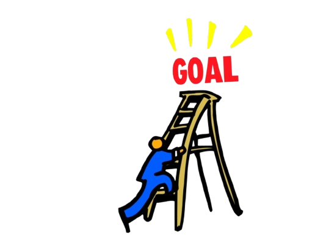
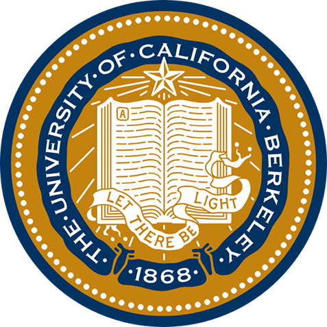

Piano
I’ve been self-teaching myself piano, on and off, for about five years now. I’ve learned basic music theory, such as the major and natural minor scales, common chord progressions and chord types, and inversions that change chord voicing.

I’m glad to know that your interested in learning about my life.
A short introduction to myself. I’m Filipino, but I was born in Saudi Arabia and only lived in the Philippines for three years before moving to California. I’m interested in getting into IT (Information Technology) and the field of programming and computer science. I’m currently a high school student and attending CART, the Center for Advanced Research and Technology, in Fresno.
At the start of the CART Web App program, I thought that I would be fairly comfortable with the material in class and be able to keep up with it easily since I had previous experience in other coding classes. I was comfortable with the basic concepts we learned at the start of the year in HTML and CSS, but the pace of the class surprised me, and my prior knowledge quickly got outgrown. I was suddenly getting behind in class projects, and my knowledge of class material didn’t meet the standard that I usually held myself to. The first project that really challenged me was completing CSS Zen Garden. It was the first time that I was expected to create a project fully on my own, with just me and my limited CSS knowledge. The only creative restriction put on me was the need to implement a list of specific CSS selectors in the final product. It was a daunting task, and, at first, I didn’t know how to start.
Getting through these projects was difficult at first. I was much more used to working on multiple small assignments daily in my previous computer science classes, rather than slowly working towards completing a large project that simulated a real product. As I completed more projects, however, I became more confident in my skills and in combining my knowledge of HTML, CSS, and JavaScript into a single thought process. Rather than thinking of each as its own thing, I began thinking about development in advance, asking questions like “Should I structure the HTML like this or this in order to minimize the CSS work needed?” Even during this period, when my skills grew rapidly, I still struggled, especially with the To Do app. This project put my JavaScript expertise to the test. Without the ability to consult AI, I had to learn continuously on my own and research the properties, functions, and APIs I would need to use to program the app. Even though my JavaScript skills were not at the level I would have been comfortable with for completing this task, I persisted and learned what I needed in order to get the job done.
Now, nearing the end of my year at CART, I’ve grown as a programmer and as a collaborator. On my last project, the prototype EECU Budget Calculator. I utilized the culmination of all my HTML, CSS, and JavaScript abilities in order to complete my project and help others develop their own vision for the application. I collaborated with my classmates in order to develop each other's websites, completing programming work in the fields in which our partners were weak to make up for individual weaknesses. We even utilized API such as Chart.js and Fetch to complete this project. Now, this portfolio I am creating right now is the final test and culmination of all my efforts in integrating all my programming knowledge this year. My willingness to learn, improve, and solve problems is what has brought me this far.

By the end of this year, I hope to complete my Junior year and all my projects without complications. In my senior year, I intend to take another full schedule of AP and honors classes, not limited to but including: AP Statistics, AP Environmental Science, and Biomedicine, which is another CART lab. After my senior year, I plan to either attend community college before transferring to a UC, ideally UC Irvine or Berkeley, in order to study Computer Science. After studying and getting my Bachelor’s degree, I hope to apply and start my career at an entry-level position at a small company before proving my competence and steadily making my way up the career ladder to possibly graduate to working for today's modern tech leaders, such as Google and Microsoft.
I’ve been self-teaching myself piano, on and off, for about five years now. I’ve learned basic music theory, such as the major and natural minor scales, common chord progressions and chord types, and inversions that change chord voicing.

In my free time, I often like to draw characters from fictional works that I enjoy. Digital art is a medium that helps me express fun ideas and creativity that I generate in my head. Check out my Pixiv Account to see a collection of my works!
Visit my Pixiv